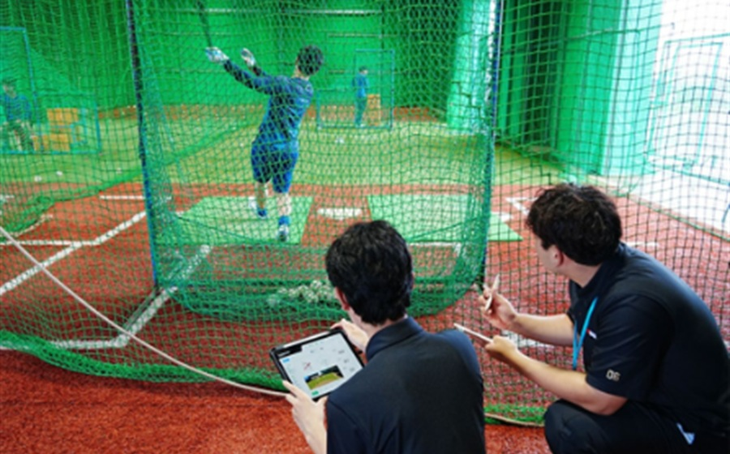
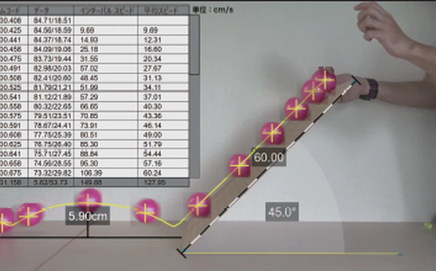
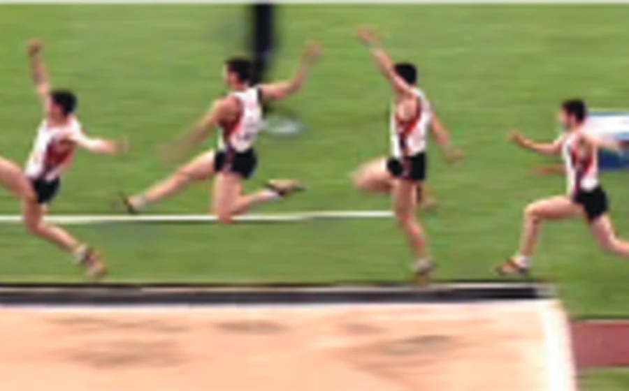
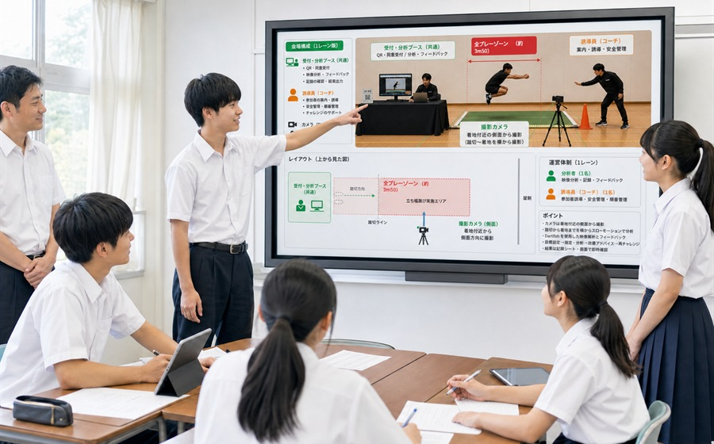
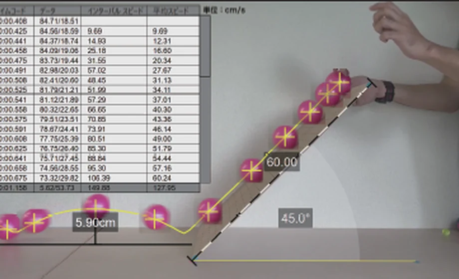
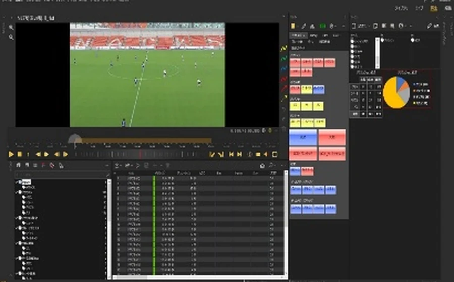
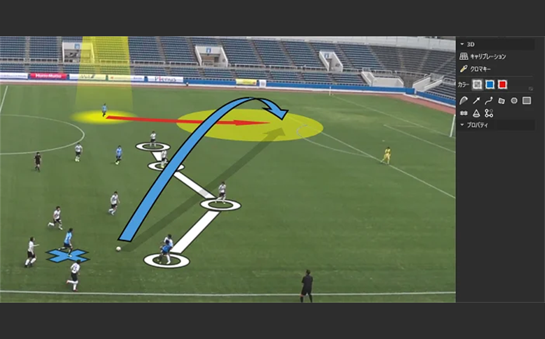
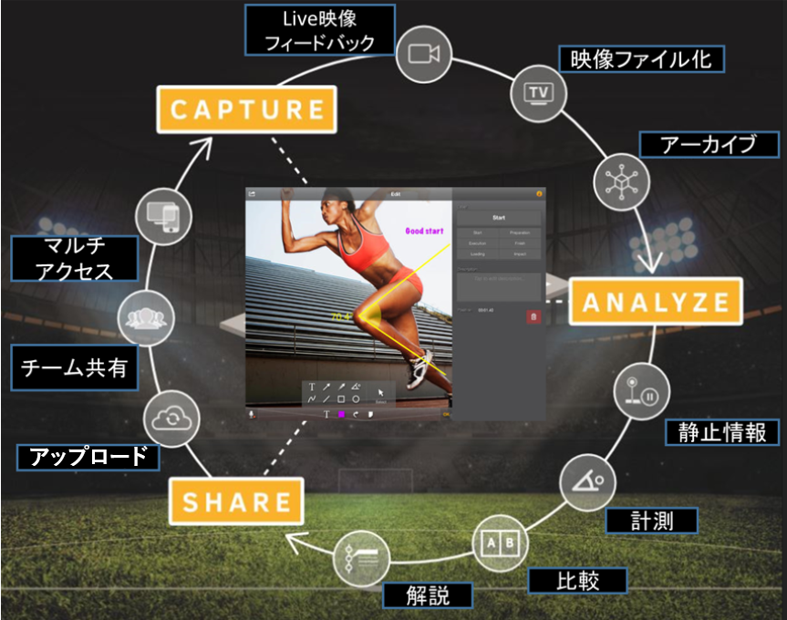

探究テーマの設定
課題研究の題材を、身近な活動から見つけたい。
探究やDX推進を進めたい一方で、学校現場では次のような課題が生まれています。
課題研究の題材を、身近な活動から見つけたい。
生徒が実際に収集・分析できる教材が少ない。
機器はあるが、授業への落とし込み方が分からない。
体育・情報・理科をつなぐ共通テーマが欲しい。
部活動の分析やフィードバックを客観化したい。
観察から考察までを一連のサイクルにし、探究のプロセスを可視化します。

タブレットやカメラで競技や動作を撮影し、映像データを収集します。

スロー再生や各種測定で、動きやパフォーマンスを数値化します。

動きの変化や傾向を見える形にし、比較・検証しやすくします。

データを根拠に考察し、レポートやプレゼンテーションにまとめます。
デジタル活用の実践から科学的な課題研究まで、教科や活動を横断して展開できます。
DX HIGH SCHOOL
ICTを活用した授業実践や、データ活用型の探究学習を具体化します。
SUPER SCIENCE HIGH SCHOOL
観察・仮説・検証のサイクルを、映像と測定データで支えます。

授業でも研究でも扱いやすく、考察の根拠になる機能を搭載しています。
映像を比較・合成して、一つの画面に表示。重ねることで微妙な動きの違いを発見します。

映像上の位置、角度、距離、時間を測定し、数値データで客観的に分析できます。

試合映像をプレイリスト化し、統計データと連携。パフォーマンスを見える化します。

映像に視覚効果を加えて重要なシーンを分かりやすく強調。位置・速度・加速度・距離などを3Dで分析し、測定データを表示します。
※掲載画像は構成イメージを含みます。実際の製品画面への差し替えが可能です。
身近なスポーツや運動を、数学・理科・情報の視点で問い直します。
動作を比較し、改善点をデータで検証する。
動作周期や効率を比較・検証する。
角度や速度からフォームを評価する。
滞空時間や角度を測定して考察する。
試合映像を分類し、戦術を分析する。
力学や統計との関係を探究する。
初めての学校でも取り組みやすいよう、導入から授業・研究での活用まで丁寧に支援します。
目的や教科、校内環境を確認し、適した活用方法をご提案します。
基本操作から授業設計まで、実際の活用を想定して支援します。
テーマ設定や分析方法、発表への展開をご相談いただけます。
運用開始後も、活用状況に合わせてサポートします。

資料請求やご相談など、お気軽にお問い合わせください。
学校の課題や目的に合わせ、最適な構成をご提案します。
実際の映像を使い、操作と活用イメージをご確認いただけます。
環境設定や研修を行い、授業・研究での運用を開始します。
体育・保健を中心に、情報、理科、数学、総合的な探究の時間、部活動などで活用できます。
基本操作はシンプルです。教員向け研修や導入後のサポートもご用意しています。
映像、比較、測定、グラフなどを根拠として、レポートやプレゼンテーションへ展開できます。
学校の目的、教科、設備、予算に合わせて、機器構成や活用プランをご提案します。
構成や校内環境によって異なります。希望時期を確認し、必要な準備とスケジュールをご案内します。
はい。活用イメージや導入プランをまとめた資料、デモのご相談を受け付けています。
学校の目的や環境に合わせて、資料のご案内や活用方法をご提案します。複数の項目を選択できます。